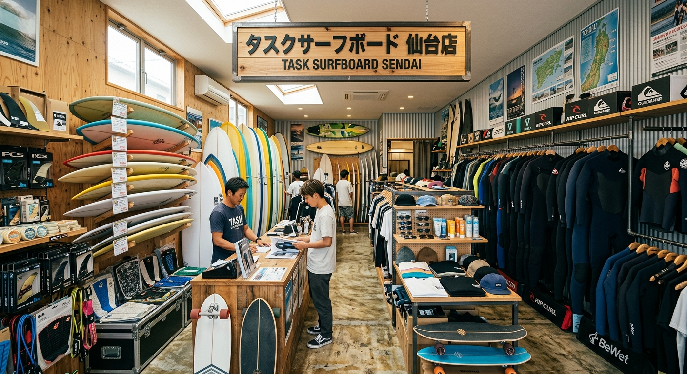

オーナーの想い

サーフィンって難しいスポーツと言われていますが、そんなことは全くありません！と言うのは簡単です。
当店のお客様もみんなそれぞれ、サーフィンへの思いは違います。僕が一番難しいと思うのは、本当に楽しいサーフィンを、毎日どう楽しむか、ということです。
初心者の方からプロフェッショナルの方まで、みんなそれぞれ無限大の楽しみ方ができるのがサーフィンというスポーツです。それをいち早く見つけられた幸せな方は、きっと自然にライフスタイルの一部になるでしょう。
TUSK SURFBOARDS SENDAIは、そんな充実したサーフィンライフを、これから出会う仲間と共有できればと思っています。
代表 佐藤 弘一朗
Ride on Life